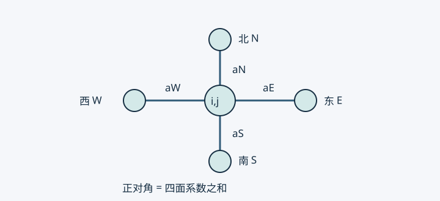

03 · 二维差分与线性方程组性质#
来源：S01 物理第 3 页。通量推导、热阻解释、矩阵证明与算法条件为编写者补充。
五点格式是四条边的热量收支#
设 −∇⋅(k∇T)=Q，已知 k(x,y)>0，待求 T(x,y)。矩形网格步长为 hx,hy，Tij 是近似温度。东面数学通量为 ki+1/2,j(Ti+1,j−Tij)/hx，西面同理。两面相减再除以 hx 近似散度，y 方向重复后取负号，得
(aE+aW+aN+aS)Tij−aETi+1,j−aWTi−1,j−aNTi,j+1−aSTi,j−1=Qij,
其中 aE=ki+1/2,j/hx2,aW=ki−1/2,j/hx2,aN=ki,j+1/2/hy2,aS=ki,j−1/2/hy2。同一条网格边在两侧方程使用相同面系数。

图中每条边只有一个面系数，说明为什么相邻两节点的耦合应一致。若 k 为常数且 hx=hy=h，得
4Tij−Ti+1,j−Ti−1,j−Ti,j+1−Ti,j−1=h2Qij/k.
无源时中心温度等于四邻点平均。光滑解的常系数模板误差为 O(hx2+hy2)；矩形网格本身不降低阶数。九点高阶格式需同时修正源项和边界，不能只增加四个角点便宣称四阶。
给定空间系数 k(x,y) 不破坏线性；若 k 依赖未知温度，通常为非线性。
调和平均的物理前提#
两节点距离 h，材料界面恰在中点，两侧导热率为 kL,kR。串联稳态传热的通量相同，总热阻相加，因此
keffh=2kLh+2kRh,keff=kL+kR2kLkR.
例如 kL=1,kR=9，等效值为 1.8，算术平均 5 会低估这段串联热阻。若两侧厚度为 dL,dR，应改为 (dL+dR)/(dL/kL+dR/kR)。对于给定光滑系数，面值或适当算术插值也可能二阶一致；并非任何算术平均都破坏守恒。守恒关键在两侧使用一致的面通量。
已知边界必须修正右端#
设全量系统为 Au=b。自由节点集合为 F，已知节点集合为 D，已知值为 d。分块后自由行是
AFFuF+AFDd=bF⟹AFFuF=bF−AFDd.
这就是“删行删列＋修正右端”。原已知行可在求解后用于恢复反力或边界收支。
| 做法 |
性质 |
| 删已知行列并修正右端 |
保持对称的缩减系统 |
| 先修正右端，再同时清零行列、对角置 1、边界右端置 d |
原规模且保持对称 |
| 只将已知行改为单位行 |
解可相同，但一般破坏对称 |
| 对角加大罚数、右端加罚数乘已知值 |
可保持对称，但约束近似，通常恶化条件数 |
例如 A=1−10−12−10−11，b=0，两端给 u0=1,u2=3。自由行变成 2u1=4。若遗漏移项，会误得 u1=0。
为什么稀疏、对称、正定#
每个内点最多耦合五个未知量，故非零元数量为 O(N)，N 是未知节点数。编号改变带宽，不改变物理问题。半带宽 b 的常规带状直接分解通常需要 O(Nb2) 运算，二维直接求解不能一概说成线性复杂度。
共享正面权的规则网格扩散矩阵满足
zTAz={i,j}∑wij(zi−zj)2,
无向边各计一次，wij>0。z 是任意节点变化，消元后取 zD=0。各项非负，未约束矩阵因此半正定。若每个网格连通分量都连到已知边界，零能量迫使沿每条边 zi=zj，再由边界为零得全场为零，故自由矩阵正定。对称性来自共享权值。
纯 Neumann 且无反应项时，常数向量是零模态；需兼容条件和均值等约束。非负 Robin 能量也可消除常数模态，但必须约束所有连通分量。非均匀网格体积归一化后，矩阵可能只在加权内积下对称，需要另行分析。
对角占优与求解器适用条件#
原五点模板的对角恰等于邻边系数之和。消去已知节点后，其邻近自由行可能严格占优。源项只改变右端，不能使矩阵严格占优。
对连通、正权、至少一行严格占优的不可约弱对角占优扩散矩阵，Jacobi 和 Gauss-Seidel 收敛；只有弱占优本身不够。SPD（对称正定）矩阵可用 Cholesky 或共轭梯度 CG；CG 不能只检查对称。对 SPD，SOR 取 0<ω<2 是常用收敛条件。
u=A−1b 是数学表达式，实际用分解或迭代，通常不显式求逆。残差 b−Au 小并不保证同等小的解误差，条件数决定误差放大上界。
有限元也会得到稀疏能量矩阵，但一般网格、各向异性和高阶元未必对角占优。下一章从杆件能量构造弱形式。
自测：只改三节点例子的首末行，为什么不再对称？改变右端热源会改变特征值吗？为什么未约束的扩散刚度矩阵不能直接用 Cholesky？